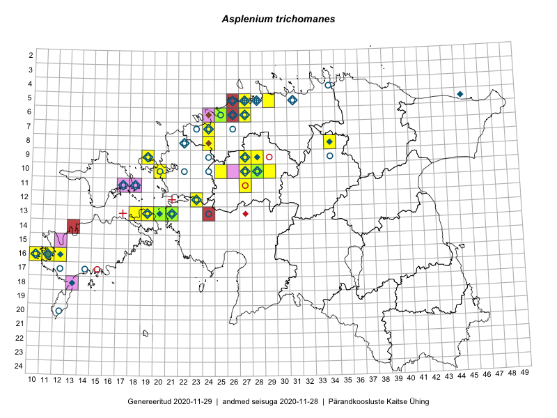

Asplenium trichomanes
Uuendatud: 2016-12-07
Kaardile koondatud taksonid: Asplenium trichomanes L.; Asplenium trichomanes subsp. quadrivalens D.E.Mey.

Kaart põhineb 23 vaatlusel. Taime on leitud 13 ruudust.
| Ruut | Vaatleja(d) | Vaatlusaeg | Kirje tüüp | Viide andmebaasikirjele |
|---|---|---|---|---|
| 06-27 | Toomas Kukk | 2015-06-19 | ruut/ala | vaata PlutoFis |
| 06-27 | Toomas Kukk | 2015-06-19 | punkt | vaata PlutoFis |
| 06-27 | Toomas Kukk | 2015-07-13 | punkt | vaata PlutoFis |
| 06-27 | Toomas Kukk | 2015-07-13 | punkt | vaata PlutoFis |
| 08-34 | Jana-Maria Habicht, Ester Valdvee | 2015-07-31 | ruut/ala | vaata PlutoFis |
| 08-34 | Jana-Maria Habicht, Ester Valdvee | 2015-07-31 | punkt | vaata PlutoFis |
| 13-19 | Meeli Mesipuu, Kadri Tali | 2015-06-24 | punkt | vaata PlutoFis |
| 10-25 | Aat Sarv | 2015-07-21 | ruut/ala | vaata PlutoFis |
| 13-20 | Kadri Tali | 2015-04-15 | ruut/ala | vaata PlutoFis |
| 06-25 | Mari Metsoja, Jaak-Albert Metsoja | 2015-07-25 | ruut/ala | vaata PlutoFis |
| 13-19 | Kadri Tali | 2015-06-03 | ruut/ala | vaata PlutoFis |
| 09-28 | Aat Sarv | 2015-05-02 | ruut/ala | vaata PlutoFis |
| 09-28 | Aat Sarv | 2015-08-27 | ruut/ala | vaata PlutoFis |
| 10-20 | Tõnu Ploompuu, Anna-Grete Rebane, Hanna-Eliisa Luts | 2015-07-20 | ruut/ala | vaata PlutoFis |
| 06-27 | Tõnu Ploompuu | 2015-08-11 | ruut/ala | vaata PlutoFis |
| 10-27 | Ulvi Selgis | 2016-07-23 | punkt | vaata PlutoFis |
| 13-19 | Ulvi Selgis | 2016-06-26 | punkt | vaata PlutoFis |
| 13-21 | Maret Gerz, Aat Sarv | 2016-07-05 | punkt | vaata PlutoFis |
| 13-21 | Aat Sarv, Maret Gerz | 2016-07-05 | ruut/ala | vaata PlutoFis |
| 10-28 | Timo Luhamäe, Peedu Saar | 2016-07-06 | punkt | vaata PlutoFis |
| 12-23 | Mari Reitalu, Oliver Parrest | 2016-07-05 | ruut/ala | vaata PlutoFis |
| 10-28 | Peedu Saar, Timo Luhamäe, Johannes Kõdar | 2016-07-06 | ruut/ala | vaata PlutoFis |
| 16-10 | Sirje Azarov | 2016-10-05 | punkt | vaata PlutoFis |